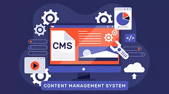
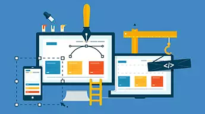

Open source technologies are all set to transform the IT services domain.
Over the past decade, we have witnessed how more and more enterprises are
adopting open source technologies to help improve their strategic IT goals.
Open source technologies are bringing down the overall costs of software
development. We have also witnessed leading software proprietary companies
also contributing towards open source development as they understand that
this is going to be the future of IT. Open source technologies are assisting
businesses in reducing the IT operating costs and improving performance of
their IT assets. At Parsupp, we strongly believe that Open source technology
offers higher performance and reliability and is a cost effective medium for
software development.
Products
People choose to outsource for many different reasons.
Some people may not be able to afford the cost of hiring employees,
so they may see outsourcing as a more affordable option.
On the surface, outsourcing can seem a little daunting and expensive
because it will require some training and time spent setting up an
account with your outsourced service provider. However, outsourcing
can end up saving you valuable time and money in the long run.
An employee can be a huge cost, as they get paid hourly or by the year.
You also have to pay them whether they're sick or not. When you outsource,
you can set your own hours and determine your own schedule.
CMS

We live in a digital age, where data and content play an important
role in the success of any organization. Any business needs to
provide the right content to their customers at the right time.
This is where Content Management System (CMS) comes into the
picture and it acts as a backbone of your content marketing
strategies and campaign.
The fact of the matter is that you cannot switch over your CMS
with a single click, it is an in-depth process that requires
a lot of effort, analysis, and coordination among different
teams of your organization.
Website

We are a Web development outsourcing company based in USA.
We can create anything from simple landing pages or one page
websites to complex online platforms with user management and
payment gateways. We have a team of experienced web developers
capable of creating secure, cost-effective and scalable web solutions.
Mobile APP
Companies today deliver to mobile app go ahead as portion of
their digital issue strategy. The entire quantity reduction
of a digital strategy is to simplify the way we flesh and blood,
con, and reach things. Organizations are adapting it accordingly
in order to catch and bond the segment that sufficiently adopts
the digital technology. The fact is that if you are not online,
you will lose a major share of the make known.
The triumph of a matter depends harshly speaking how nimbly
you use the technological opportunities and channelize it to
control and construct a bridge to your audience. Connecting
following than your audience would require you to have a
technological structure in place and it is worth mentioning
that more and more companies are building mobile applications
as a allocation of their digital strategy. The impact of having
a mobile application is all-powerful.